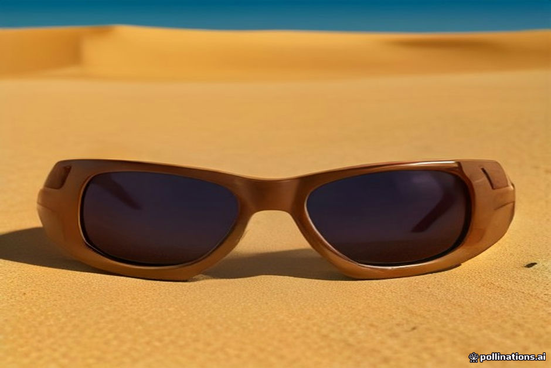

The sand at Erg Chebbi is not coarse beach shingle; it is a micro-fine quartz silt that drifts on the mildest breeze. For travelers wearing contact lenses, this dust poses a direct challenge. A single grain caught beneath a lens while riding a camel or walking the dunes can scratch your cornea quickly, turning an evening under the stars into a painful medical issue.
Managing eye hygiene inside a desert tent also requires advance preparation. Running water in camp bathrooms comes from local wells or storage tanks, meaning it is unsterilized and often carries fine sediment. If you rely on vision correction, taking specific precautions with daily disposables, saline packing, and back-up glasses is essential before leaving Marrakesh or Fes.
Why Desert Sand Threatens Contact Lens Wearers
Even on days when the weather looks perfectly calm, thermal currents over the warm dunes keep airborne dust suspended near ground level. When you ride a camel or walk along the high ridges, your eyes are elevated directly into these light wind channels.
If dust enters your eye while wearing lenses, the natural instinct is to rub it. Rubbing a contact lens against micro-fine quartz sand creates abrasive friction across the corneal surface. If you feel grit, you must pull over, wash your hands thoroughly, and remove the lens immediately rather than waiting until you reach camp.
Daily Disposables vs. Monthly Lenses
We strongly advise leaving monthly or bi-weekly lenses at home for the desert portion of your trip. Cleaning and storing multi-use lenses inside a desert tent is high-risk, as airborne particles constantly settle on open lens cases and solution caps.
Daily disposables are the safest option. You open a fresh, sterile blister pack each morning and throw the lenses away before sleeping. Bring twice as many daily pairs as you think you need for your packing checklist, giving you extra replacements if sand forces you to discard a pair midday.
Tent Hygiene: Safe Insertion and Handwashing
Hygiene inside standard and luxury tents requires a deliberate routine. Camp bathroom water should never touch your contacts or your open lens containers due to non-sterile well water risks detailed in our desert camp bathrooms guide.
Always wash your hands with soap and clean bottled drinking water, then dry them completely with a fresh paper towel rather than a shared cloth towel. Insert or remove your lenses while leaning over a clean surface, such as a plastic bag laid over your nightstand, away from open tent doors or windows where wind might blow dust.
Essential Packing: Saline, Drops, and Backup Glasses
Pharmacies in small southern towns like Midelt, Erfoud, or Rissani rarely stock specialized contact lens solutions or unpreserved rewetting drops. You must purchase all supplies in Marrakesh, Fes, or Errachidia before your driver heads south into the Atlas Mountains.
Pack small single-use vials of sterile saline or lubricating eye drops. These vials let you flush sand out of an eye without contaminating an entire bottle. Most importantly, carry your prescription glasses in a hard case everywhere you go—including on camel treks and quad bike excursions.
Physical Eye Protection: Sunglasses and Goggles
Contact lenses offer no mechanical shield against blowing wind. Close-fitting wrap-around sunglasses are necessary during daytime walks and camel rides to block side-drafts carrying silt.
If your itinerary includes quad bikes or buggies across open hamada tracks, standard sunglasses are usually insufficient against the heavy dust kicked up by tires. Wear proper foam-sealed dust goggles over your prescription glasses or daily lenses, and check wind forecasts prior to departure by reading our notes on Erg Chebbi sandstorms and wind safety.
| Eyewear Option | Practical Advantages in Erg Chebbi | Main Drawbacks & Risks |
|---|---|---|
| Daily Disposables | Sterile each day; discarded easily if contaminated by sand | Requires clean bottled water handwashing setup in tent |
| Prescription Glasses | Zero infection risk; easy to clean; shields eyes from direct wind | Can slip down nose during heat; light sand can hit sides without wrap frames |
| Monthly / Reusable Lenses | Fewer physical blister packages to pack | High infection risk; hard to keep cases and storage fluid dust-free in tents |
| Foam-Sealed Goggles | Total wind and dust barrier during quad biking or strong winds | Can fog up in heat; bulky to carry in small daypacks |

Illustration, not a photograph — for the real thing, you'll have to stand on the ridge yourself.
Quick answers
A few follow-up questions travelers ask about this.
Can I buy contact lens solution in Merzouga or Rissani?
No. Local pharmacies in small desert villages carry basic first-aid items but rarely stock contact lens fluid or specialized eye drops. Buy all necessary saline and solutions in Marrakesh or Fes prior to departure.
What should I do if sand gets under my lens during a camel trek?
Do not rub your eye. Signal your camel guide to pause, use single-use sterile saline drops to flush the eye, and remove the lens carefully. Switch to your backup prescription glasses for the remainder of the trek.
Should I wear contact lenses while sandboarding?
We recommend wearing prescription glasses with wrap-around sunglasses or dust goggles instead. Sandboarding frequently results in tumbles that kick fine sand directly into your face.
Planning your own route?
Tell us your dates and what matters to you — we'll answer with a straight recommendation, not a brochure.
Send an inquiry See the itineraries